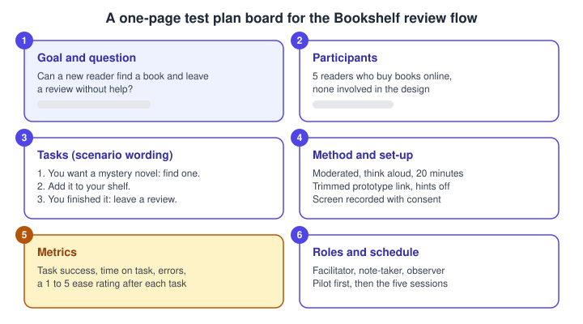
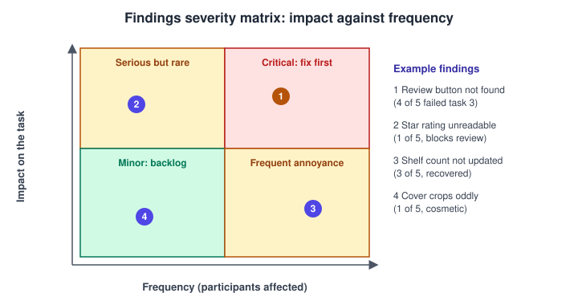
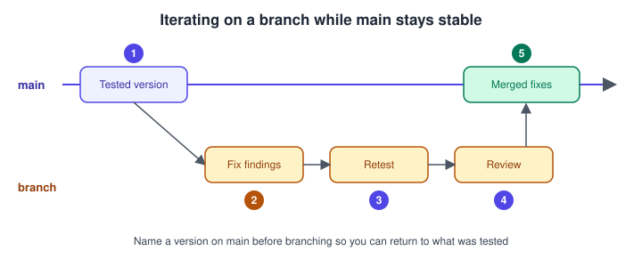

Usability Testing and Iteration
|
This content was generated with the assistance of AI and should be verified against the official documentation before being relied on in production. |
This page was written on 2026-10-30 against the UI3 interface of Figma Design. Usability testing itself is a method, not a Figma feature: Figma supplies the prototype you test and the version tools you iterate with. Playing a prototype needs no special seat according to the help article on playing prototypes, but creating a branch needs a Full seat and a plan that includes branching (see below), and version history length depends on the plan. Tier names only are given here; check Plans, Seats and AI Credits for the current model.
The running example is Bookshelf. The question for this page is simple: can a new reader find a book, add it to the shelf and leave a review without help? Building the flow is covered on Prototyping Basics, and sharing it is covered on Presenting and Testing Prototypes. Earlier stages of the process are on UX Process and Design Thinking, Research, Personas and Journey Maps and Wireframing and Fidelity.
Usability testing versus user testing
The two terms are often used as if they were the same. A useful distinction, common in the UX literature, is:
-
Usability testing watches people attempt realistic tasks with a design and measures how easily they succeed. It answers "can they use it?". It works with rough prototypes, so it fits before any code exists.
-
User testing is the wider family of studies with users: interviews, surveys, concept tests, preference and desirability tests. It answers "do they want it, and what do they need?".
Both belong in a loop. Research comes first (see Research, Personas and Journey Maps), concept tests choose a direction, and usability tests then refine the chosen design. Testing early with a low-fidelity prototype is cheaper than fixing the same problem after development. Accessibility checks are a separate and complementary activity, covered on Accessible and Inclusive Design and, for the web, Web Accessibility; include participants who use assistive technology where you can.
The loop looks like this:
Source: Figma Learn: Guide to branching (the branch and merge steps of the loop)
Writing a test plan
A test plan is a short document, or a FigJam or Figma board, that everyone involved can read in a minute. Typical parts:
-
Goal and research question: one question that the results can answer.
-
Participants: who they are, how many and how you recruit them. Small rounds of around five participants are a common rule of thumb for qualitative usability testing, repeated after each round of fixes; treat it as a guideline, not a guarantee.
-
Tasks: written as scenarios in the participant’s words, without naming buttons or screens ("You want a mystery novel to read this weekend: find one" rather than "Use the search field").
-
Method and set-up: moderated or unmoderated, remote or in person, duration, device, consent and recording.
-
Metrics: task success, time on task, number of errors, a short ease rating, and observed quotes.
-
Roles and schedule: facilitator, note-taker, observers, and a pilot session to check the prototype and the script.

Source: Figma Learn: Test your prototypes with UserTesting (preparing a prototype for tasks); the plan structure itself is general UX practice rather than a Figma documentation topic
-
Goal and question: one sentence, here whether a new reader can find a book and review it unaided.
-
Participants: recruit people who resemble the personas, not colleagues.
-
Tasks: three scenarios, each with a clear end state.
-
Method and set-up: moderated, think aloud, with a trimmed prototype link and hints turned off.
-
Metrics: decide before the sessions what counts as success for each task.
-
Roles and schedule: run a pilot first; the amber marker highlights that metrics are what makes results comparable between rounds.
Moderated and unmoderated tests with a Figma prototype
In a moderated session a facilitator guides each participant live, in person or by video call, asks them to think aloud and probes after the task. It reveals why people struggle. In an unmoderated session participants complete tasks alone, usually through a testing platform, and you review recordings or metrics afterwards. It scales to more people at lower cost per participant but gives less chance to ask follow-up questions.
Both formats use the same prototype link. Preparing it is described step by step on Presenting and Testing Prototypes: duplicate the file, trim it to the tasks, set the audience and permission, turn off hotspot hints and the Figma UI, copy the link last and open it in a private window.
Figma documents an integration with UserTesting for this purpose, and that article lists no Figma plan or seat requirement; the testing tool itself needs its own account. Other tools, such as Maze, also accept Figma prototype links; those are third-party products, so check their own documentation for features, limits and costs. Two practical points apply to any tool:
-
A prototype only responds where connections exist. Tell participants that not everything is clickable, and design the tasks so every needed step is connected.
-
Test the exact link on the exact device you will use, because scaling and device frame settings change what participants see.
Moderated session outline for Bookshelf:
-
Welcome the participant, explain that you are testing the design and not them, and ask for consent to record.
-
Ask warm-up questions about how they choose books today.
-
Read task 1 aloud and hand over the link. Stay quiet, and note where they hesitate.
-
Repeat for tasks 2 and 3, asking for a 1 to 5 ease rating after each.
-
Close with open questions ("What surprised you?") and thank them.
Analysing the results
Right after each session, write down observations while they are fresh. Then combine them:
-
Put each observation on a sticky note in FigJam, one per issue, with the participant and the task.
-
Group similar notes (affinity mapping, see Research, Personas and Journey Maps) into findings.
-
Count how many participants hit each finding.
-
Rate the impact of each finding on the task: a blocker, a slowdown or a cosmetic issue.
-
Place the findings on a severity matrix and decide what to fix first.
-
Write a short summary: what worked, the top findings, and the recommended changes.

Source: Figma Learn: Guide to FigJam (sticky notes for synthesis); the severity matrix is a general UX technique
-
Review button not found: frequent and a blocker, so fix first.
-
Star rating unreadable: rare but it blocks the task for those affected.
-
Shelf count not updated: frequent, participants recovered, so it is an annoyance.
-
Cover crops oddly: rare and cosmetic, so it goes to the backlog.
Report findings as observations plus a recommendation, and keep quotes and recordings as evidence. Avoid reading small numbers as percentages: "4 of 5 participants" is more honest than "80 percent".
Iterating with named versions and branches
Figma gives you two tools for safe iteration.
Version history records autosaved checkpoints and lets you save and name versions. Open it from the menu next to the file name and choose Show Version History; use Save to Version History (Command Option S on macOS, Control Alt S on Windows) to create a named version. Names longer than 25 characters are clipped, and descriptions under 140 characters display fully. Restoring a version is non-destructive: Figma adds checkpoints for the current state and the restored one, and comments from all versions are kept. You need edit access to create, name or restore versions. Drafts and the Starter plan give access to only 30 days of history, while paid plans give the full history of existing files. Before a test round, save a named version such as "Test round 1" so you can always return to exactly what participants saw.
Branching creates a copy of the main file that you can change without affecting main. According to the current help article, branching is available on Education (K-12), Organization, Government and Enterprise plans, and creating a branch needs a Full seat and view or edit access to the main file. Create one from the options menu next to the file name with Create branch, give it a name such as "round-2-review-button", and make your fixes. Figma notifies you when main has updates, which you can apply to the branch (individual changes cannot be selected) or resolve at merge time. When ready, request a review, then merge; people with edit access to the main file can merge or archive a branch, and archived branches can be restored. If your plan has no branching, duplicate the file and name the copy clearly, then reapply the accepted changes manually.

Source: Figma Learn: Guide to branching
-
Tested version: a named version of main that records what was tested.
-
Fix findings: change only what the findings justify, on the branch.
-
Retest: run a small round with the branch’s prototype and compare with round 1.
-
Review: a colleague checks the branch before it is merged.
-
Merged fixes: the accepted changes land in main and the next round starts from there.
Treat each round as a hypothesis: record which finding each change addresses, and retest it. Iteration also includes deciding not to change something that only one participant hit.
Where older guides are outdated
-
Books written in 2021-22 and 2024 describe testing against the pre-UI3 interface; the present, share and options names are the UI3 ones described on Presenting and Testing Prototypes.
-
Older books and tutorials mention branching and version history under the "editor/viewer" and "paid Team plan" wording; the current model uses Full, Dev, Collab and View seats (since 2025-03-11), and branching is tied to specific plans.
-
Mobile Mirror steps in older books changed with the current mobile app.